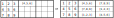

ラテン方陣(素朴版)
⇒Latin Square(新)
ラテン方陣は、nxnの枡に1～nの数字を縦1列・横1行にダブりなく配置したものです。
数独の解は、9x9のラテン方陣にさらに全体を3x3のブロックに区切り、ブロックについてもダブりなく1～9の数字を配置する、と制約したものです。
9x9のラテン方陣は5.525x1027ありますが、ブロック制約付の9x9のラテン方陣(数独の解)は6.671x1021と約1/1,000,000になります。
(正確には、5524751496156892842531225600、6670903752021072936960)
【参考】Frazer Jarvis, June 20, 2005,Enumerating possible Sudoku grids,
http://www.afjarvis.staff.shef.ac.uk/sudoku/sudoku.pdf
1つは、2.2で解説した順列クラスの応用です。
2つは、数独問題を作る方法の準備です。
3つは、数独アプリケーションのGUIに慣れていただくことです。
アプリケーションのGUIは、数独の解法を開発するために必ずしも必要ではありませんが、習得していると他の開発でも効率が上がるので、 LatinSquareExerを動かしてみてください。
ステップ1
6.671x1021個のラテン方陣をそのまま作ってもよいのですが、本質的に同じものは省きたいので、ブロック1(左上ブロック)の数字を固定します。 これは、ブロック1の数字を{ak|k=1～9}としたとき、方陣全体に{ak→k}の変換を施すと左の方陣に変換できることによります。

ステップ2
ブロックB2とB3に入る数字を考えます。最初はブロックB2の1行目に{4,5,6}が入るケースです。{}は、順番は任意であることを表します。 すなわち、ブロック制約ありのラテン方陣のブロックB2の1行目が“4,5,6”なら、列C4,C5,C6を任意に交換してもそれはブロック制約ありラテン方陣であることによります。 このとき、ブロックB3の1行目は{7,8,9}に決まります。さらにブロックB2の3行目は{1,2,3}となり、ブロックB2の2行目{7,8,9}となるので、 結局ブロックB2の1行目が{4,5,6}ならブロックB2とB3の全てが決まります。ブロックB2の1行目が{7,8,9}の場合も同様に決まります。 このパターンを“456,789”型とします。なお、{abc}の並び方は6通り(3!)あるので（abc,acb,bac,bca,cab,cba）、 “456,789”型は2x(3!)6 = 93,312通りあります。
ステップ3
ブロックB2の1行目に{4,5,7}が入るケースです。このとき、B3の1行目は{6,8,9}となります。 ブロックB2の2,3行目は、{a,b,c} = {1,2,3}として、{8,9,a}{6,b,c}、 ブロックB3の2,3行目は{7,b,c}{4,5,a}となります。abcの選び方は組合せ（3C1）で3通りあります。 このパターンを“457,689”型とします。ブロックB2の1行目に入る数字パターンは{4,5,7}の外に、 {4,5,8}、{4,5,9}、{4,6,7}、{4,6,8}、{4,6,9}、{5,6,7}、{5,6,8}、{5,6,9}の 合計9通りあるので、“457,689”型は、2x9x3x(3!)6 = 2,519,424 通りあります。

ステップ4
ブロックB4、ブロックB7についてもステップ2,3と同じようにパターンを決めることができます。
ここまで、たどり着いたかた（あるいはワープした方）は、ラテン方陣生成アプリケーションLatinSquareExer）を動かしてみるとよいでしょう。
ブロックB2、B3、B4、B7を選択すると、B5689ボタンの下に、このパターンのブロック制約付ラテン方陣の数を表示します。
B5689ボタンをクリックすると個々のラテン方陣を順に表示します。ブロックB2、B3、B4、B7の設定により数は違いますが、
2620～6280(<確認が必要）のラテン方陣があることが示されます。ブロック1を固定しているので1/9!ですが、
これを集計したのが、数独の解となりうるブロック制約付ラテン方陣の数6.671x1021になります。
数独の解となる数字配列がどれだけ多くあるか、体感してみてください。
ブロック制約付ラテン方陣の数を数え上げるには、ここで紹介したこと以外のことも用いて（問題を小さくして）、
実際に数えあげます。興味のある方は、先の文献をみるとよいでしょう。
また、数独解析プログラムを持っている方は、このルーテインとつなげれば問題作成プログラムが作れます。

数独生成アプリへの組み込みのためのTips
ステップ１～４でブロック制約付きのラテン方陣は生成できます。これにマスクをかけて、以下のような数独の問題になります。
ただし、次の図のように、元となるラテン方陣が異なるのに、マスクを適用すると同じになることがあります。
このように、元となるラテン方陣が２つ以上ある場合は、数独の問題にはなりません。
同一のラテン方陣の割合は、マスクの数が少ないほど高くなります（20～50%）
数独の解析・生成アプリ"GNPX"では、唯一のラテン方陣から作られた候補のみを対象としています。

ラテン方陣（左）にマスク（中央）を適用すると、数独の問題となる。この例では赤丸箇所が異なる。